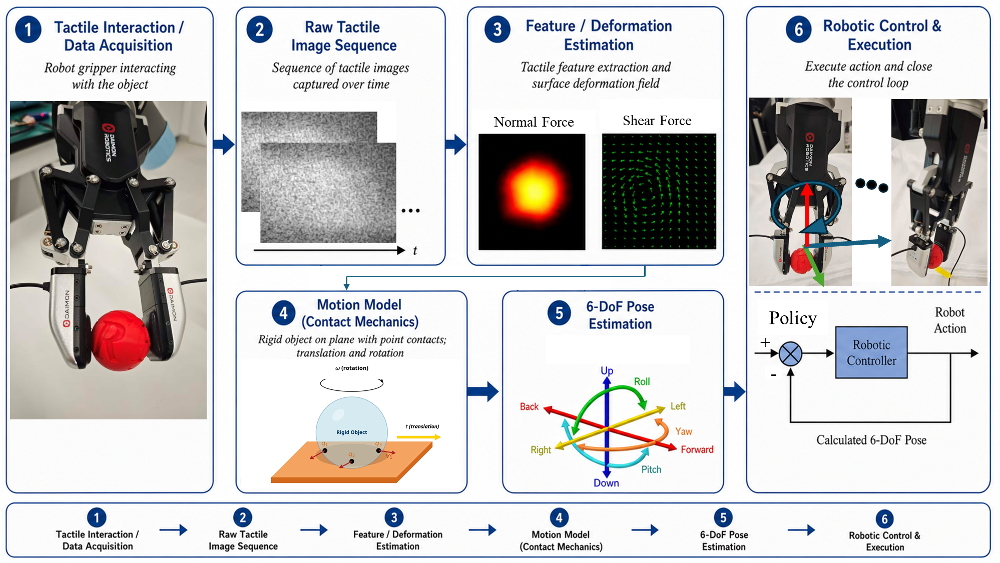
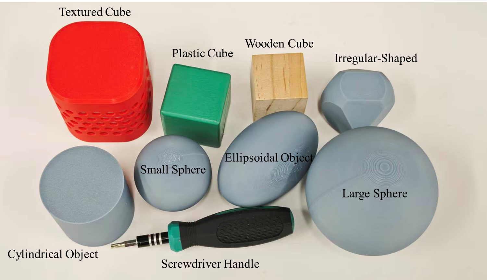
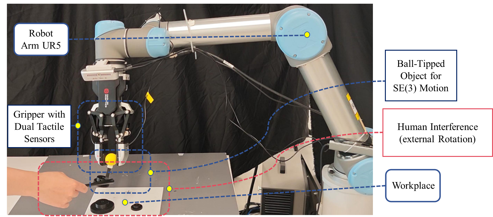

1Hong Kong Center for Construction Robotics, HKUST 2HKUST (Guangzhou) 3Great Bay University
*Corresponding authors
Robotic in-hand manipulation requires accurate object pose tracking despite frequent visual occlusions. Vision-based tactile sensors (VBTSs) provide dense contact observations in such settings, but stable rigid-body motion estimation from tactile images remains difficult for textureless or symmetric objects, where reliable correspondences are scarce and small errors accumulate into drift.
This paper presents TacSE3, a tactile-motion-estimation pipeline that maps low-texture visuotactile measurements to a decoupled three-dimensional force field and estimates incremental rigid-body motion on SE(3) through a least-squares rigid-body model with manifold-consistent integration. Following dense-pattern VBTS processing, the method separates normal and tangential responses, derives planar translation from the motion of the contact-region centroid on the sensor plane, and estimates rotation primarily from the shear-related field, thereby avoiding ill-conditioned coupling between uniform in-plane translation and angular motion in a single joint fit.
Experiments on paired fingertip DM-Tac sensors show that dual-sensor sensing mitigates translation–rotation ambiguity, controlled grasped-ball trials provide reliable rotation tracking across axes and rotation magnitudes, and evaluations on multiple object geometries support generalization beyond a single object class. Policy-level experiments further show that the estimated rotation can serve as an effective post-processing signal for improving disturbance tolerance. Overall, these results support TacSE3 as a practical geometric interface between low-texture visuotactile sensing and contact-rich in-gripper manipulation.
Keywords: Visuotactile sensing, tactile motion estimation, in-gripper manipulation, equivariant motion estimation, tactile feedback control.

Figure 1: Overview of the proposed tactile-image-to-SE(3) estimation pipeline. Given a sequence of tactile observations, the method identifies the active contact region, decouples the tactile response into a 3D force field, fits a rigid-body model in SE(3), and integrates the estimated twist for online compensation.
TacSE3 treats the tactile image as a geometric measurement of contact rather than a conventional textured image. The pipeline follows three principles: contact-first sensing, force-field decoupling, and rigid-body consistency. Planar translation is derived from the contact-mask centroid, while rotation is estimated from the shear-related field — avoiding ill-conditioned coupling in a single joint fit. The tactile response is decoupled into tangential (shear) and normal components via Helmholtz–Hodge decomposition, forming a dense 3D force field used for rigid-body estimation.
A rigid ball is grasped and commanded rotations are applied around axes rx, ry, rz. The visualization interface shows tracked 6D pose data together with tactile image data from the visuotactile sensors.
Rotation around rx
Rotation around ry
Rotation around rz
TacSE3 is evaluated on 8 objects varying in geometry and surface texture, including smooth textureless objects (sphere, ellipsoid, cylinder) and objects with surface structure (textured cube, screwdriver handle).

Figure 2: Objects used in the multi-object evaluation.
Ellipsoidal Object
Irregular-Shaped Object
Wooden Cube
Textured Cube
Plastic Cube
Screwdriver Handle
Large Sphere
Cylindrical Object
The estimated rotation is used as a post-processing signal on top of an ACT base policy. Three tasks are evaluated under human disturbance: Drawing, Gear Insertion, and Peg-in-Hole.

Figure 4: Experimental setup — UR5 robot arm with two DM-Tac visuotactile sensors.
Without TacSE3
With TacSE3
Without TacSE3
With TacSE3
Without TacSE3
With TacSE3
Even when an object is initially grasped securely, small translations, rolling motions, or local rotations relative to the gripper can accumulate into alignment errors and task failure. TacSE3 detects and compensates for in-gripper object drift in real time using only tactile sensing.
The challenge is especially severe for low-texture objects (polished spheres, smooth cylinders) where vision-based tracking fails and traditional tactile methods relying on image correspondences break down. TacSE3 addresses this by treating the tactile stream as a geometric measurement of contact force rather than a textured image, enabling robust SE(3) estimation even under textureless contact conditions.
@article{tacse3_2026,
title = {TacSE3: Equivariant SE(3) Motion Estimation from Low-Texture
Visuotactile Images for In-Gripper Tracking and Compensation},
author = {Liao, Zhongyuan and Wang, Junzhe and Liu, Qingyang and
Huang, Zhenmin and Ma, Jun and Cai, Yi and
Meng, Fei and Liang, Haobo and Wang, Michael Yu},
journal = {arXiv preprint},
year = {2026}
}